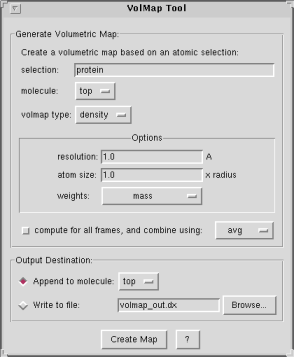

The VolMap plugin provides a graphical front-end for VMD's volmap
command. The VolMap plugin creates volumetric maps (3D grids containing a value
at each grid point) based on the atomic coordinates and properties of a
specified atom selection. The generated maps can then be visualized in VMD using
the Isosurface and VolumeSlice representations or using the Volume coloring
mode.
Map Generation Parameters
The plugin allows you to specify the following:
- selection: only use the selected atoms for the volmap computation.
- molecule: the selected atoms will be taken from the specified molecule.
- volmap type: this is the type of map that will be generated. Each map type has its own set of options. See the Volumetric Map Types section further down for a description of these.
- compute for all frames: you can choose whether to compute a map using only the current frame, or to combine the frames over an entire trajectory. VolMap allows you to specify how the frames will be combine: by averaging, or by useing a min or max rule, etc. Certain map types, such as density and occupancy make more sense when they are averaged. Other map types such as distance make more sense for the current frame. Be aware that computing maps for every frame of a trajectory may take a lot of time during which VMD will be unresponsive.
In order to generate a new volumetric map, fill in the desired paramters and click on the "Create Map" button.
Map Types
The various volumetric data map types currently supported by VolMap are listed
as follows. Please note that when a map type refer's to an atoms radius or beta
field, etc., that these values will be read directly from VMD's
associated fields for that atom. In certain cases, you may want to adjust the
atom selections fields (such as radius, beta, etc.) before performing
the volmap analysis.
density
Description:
Creates a map of the weighted atomic density at each
gridpoint. This is done by replacing each atom in the selection with a
normalized gaussian distribution of width (standard deviation) equal to its
atomic radius. The gaussian distribution for each atom is then weighted using
an optional weight read from one of the atoms' numerical properties, and
defaults to a weight of one. The various gaussians are then additively
distributed on a grid. The meaning of final map will depend of the weights
chosen. For example, choosing a weight of "none" will copmpute the number
density, a weight of "mass" will compute the mass density, etc.
Options:
- resolution: resolution of the grid in Angstroms.
- atom size: a factor to multiply to each atomic radius before computing the map. This is often used to make the map look smoother.
- weights: the weights for each atom will be read from the property selected in the pop-up menu. "None" refers to a uniform weight of one.
distance
Description
Creates a map for which each gridpoint contains the distance between that
point and the edge of the nearest atom (defined by its VdW sphere). In other
words, each gridpoint specifies the maximum radius of a sphere centered at
that point which does not intersect with the spheres of any other atoms. All
atoms are treated as spheres using the atoms' VMD radii.
Options:
- resolution: resolution of the grid in Angstroms.
- cutoff: this is the maximum distance that is probed, in Angstroms. Distances above the cutoff will be set to the cutoff value. Increasing the cutoff will provide maps that are accurate at larger distances but may be much slower to compute.
mask
Description:
Creates a map which is set to 0 or 1 depending on whether they are within a
specified cutoff distance of any atoms in the selection. The mask map is
typically used in combination with other maps in order to hide/mask data that
is far from a region of interest.
Options:
- resolution: resolution of the grid in Angstroms.
- cutoff: this is the radius to be used for each atom, in Angstroms.
occupancy
Description:
Each grid point is set to either 0 or 1, depending on
whether it contains onbe or more atoms or not. When averaged over many frames,
this will provide the fractional occupancy of that grid point. By default,
atoms are treated as spheres using the atomic radii and a gridpoint is
considered to be "occupied" if it lies inside that sphere.
Options:
- resolution: resolution of the grid in Angstroms.
- use point particles: check this if you wish to treat particles as points. Only the grid cell in which the center of the atom lies will be marked as occupied.
Map Output Parameters
You may choose how to output the result of your computations.
- append to molecule: the map will be appended to the specified molecule in VMD. You will then be able to display Isosurfaces or query the map's contents, etc.
- write to file: the map will be written to disk as a DX-formatted file, which can then later be imported into any VMD molecule.